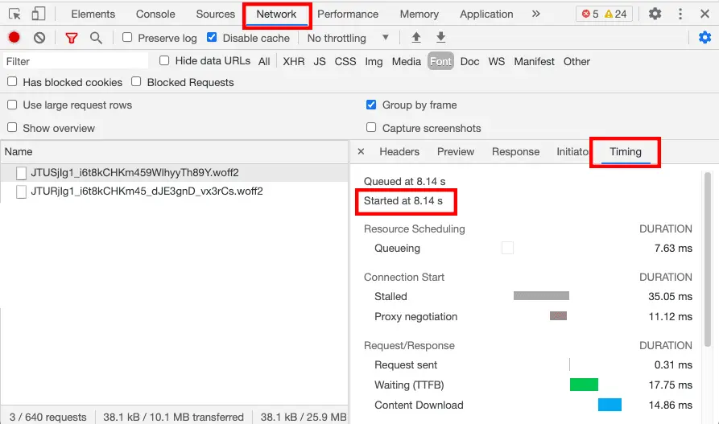

短答
在首次绘制之后才到达的网页字体，可以改变换行并移动标题。
时序标签把字体请求和渲染放在一起看。如果后备字体和最终字体宽度差很多，本来一行的产品标题可能换行并把价格往下推。这是布局偏移的原因，归在 SEO 健康，不是把文字藏到字体到达为止的理由。
定义
字体下载期间把文字藏起来，会藏住爬虫和买家都需要的内容。保持可读的后备字体，并选用不至于让标题重排的最终字体，才是符合健康检查的折中。图中的时序视图是工具示意。它不是本营销站的轨迹。
渲染对爬虫意味着什么变化
让文字在后备字体中保持可见，并避免最终字体改变标题的换行。
预加载模板真正使用的一种正文字体，和预加载品牌套件里的每一种字重不同。用不到的字重会和 HTML、主视觉争抢。SEO 健康列出影响首屏的那种字体。标题是否说清了产品，是另一个 GEO 问题，标题不可见时它也无法被回答。

要检查什么
- 字体文件到达前一直不可见的文字
- 宽度差很大的后备字体和最终字体
- 对模板从不用的字重做的预加载
- 标题发生重排的一条样例 URL
- 与标题写了什么这个内容问题分开
一个结构示例
目录加载了四种展示字重，产品名被 CSS 藏到第三种到达为止。修复是可见的后备文字和一种预加载字体。其他字重可以在使用它们的活动页上加载。
它不声称什么
稳定的字体替换不保证排名或引用。
Mika Visibility 把它归到哪里
Mika Visibility 把渲染当作 SEO 健康问题：当模板依赖 JavaScript 时，重要 HTML 能否在有脚本和无脚本两种情况下被获取并比较。这种比较不是 GEO 审计，也不是市场覆盖计划。发现要附在样例 URL 上。模板改完之后的再审计，用来确认修复。
时序图是工具示意，因此文章不会假装那是本地轨迹。
常见问题
字体怎样会移动标题？
在首次绘制之后才到达的网页字体，可以改变换行并移动标题。
什么应该保持可见？
让文字在后备字体中保持可见，并避免最终字体改变标题的换行。
稳定的字体替换能保证排名吗？
稳定的字体替换不保证排名或引用。
下一步
做一次结构化的 SEO + GEO 审计，查看健康发现、增长缺口和可以执行的蓝图。
更清晰的实体、答案、证据和上下文，会让页面更容易被理解与引用。任何回答产品中的结果都不作保证。